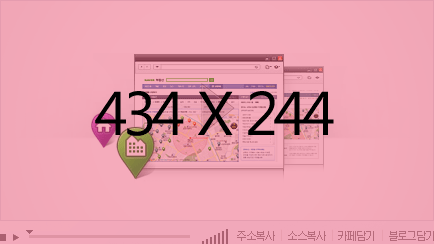

OPEN
- 네이버가 내 조건에 딱 맞는 집을 추천해 드립니다.
- 맞춤매물이란? 매수/임차인이 네이버에 찾는 매물 조건을 의뢰하면, 네이버가 해당 의뢰를 중개업소에 전달하여 조건에 맞는 매물을 추천받을 수 있도록 도와드리는 서비스입니다.
- 맞춤매물의뢰신청 MY 맞춤매물 확인

맞춤매물 STEP | 의뢰하신 맞춤매물은 영업일 기준 7일 이내 확인하실 수 있습니다.
- STEP1. 의뢰인 - 맞춤매물 신청하기 페이지에서 의뢰 내용을 작성하세요.
- STEP2. 네이버 - 네이버에서 의뢰 내용을 확인한 후 관련 지역 중개업소에 전달합니다.
- STEP3. 중개업소 - 선정된 중개업소에서 의뢰 조건에 맞는 매물을 추천합니다.
- STEP4. 네이버→의뢰인 - 중개업소에서 추천한 맞춤매물정보를 확인해 보세요.
ohmyjihyun 님
로그아웃
- 의뢰기한
- 잔여일 6일 (12.02.14~12.02.21)
매물추천중
- 의뢰내용
- 매매,전세
아파트,오피스텔 빌라, 원룸
개포동
- 추천매물
- 전체 23건 (미확인 7건)
- 공지사항
- [오픈] 부동산 맞춤매물 서비스 오픈
- [종료] 국민은행 시세 서비스 종료
- [오픈] 부동산뱅크 시세 서비스 오픈
- [오픈] 부동산114 시세 서비스 오픈
- 더보기